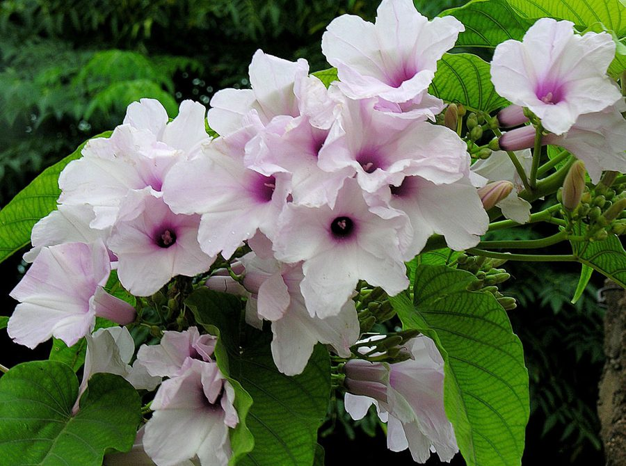

बेशरमPink Morning Glory
Ipomoea carnea subsp. fistulosa · Convolvulaceae · FLR-0024

- Scientific name
- Ipomoea carnea subsp. fistulosa authority unverified
- Family
- Convolvulaceae
- Hindi
- बेशरम / बेहया / गुलाबी घुइयाँ
- Status here
- naturalized
- IUCN
- not evaluated
When to look कब देखें
Present all year.
बेशरम / Pink Morning Glory
Ipomoea carnea subsp. fistulosa (Mart. ex Choisy) D.F.Austin — Convolvulaceae
बेशरम — नाम ही सब कुछ कहता है। "बे-शरम" यानी बिना शर्म के, बिना रुके, बिना किसी की परवाह किए। नहर के किनारे, तालाब के किनारे, सड़क के किनारे — जहाँ जगह मिली, वहाँ उग आई। इसे कोई नहीं काटता क्योंकि जानवर इसे नहीं खाते (ज़हरीली है), काटने पर नई टहनियाँ निकलती हैं, और कुछ महीनों में फिर वही घना झाड़ बन जाता है। इसका गुलाबी फूल सुंदर है — पर यह सुंदरता एक आक्रामक आक्रमण की है।
Quick Identification त्वरित पहचान
| Feature | Description |
|---|---|
| Growth form | Woody shrub, 1–3 m tall; hollow stems (fistulosa = hollow) |
| Leaves | Large, heart-shaped to ovate; 8–20 cm; soft, velvety texture; pale green |
| Flowers | Large (5–8 cm) funnel-shaped; pale pink to lavender-pink; white throat; open in morning, close by afternoon |
| Stem | Hollow, woody, greyish-green; exudes white milky latex when broken |
| Seed pods | 4-valved capsule; brown seeds; seeds have long silky hairs for wind dispersal |
| Habitat clue | Dense thickets along roadsides, pond banks, canals — often 2–3 m wide monocultures |
Field tip: Any large-flowered, funnel-shaped pink flower on a woody shrub (not a vine) along a roadside or canal bank in eastern UP is almost certainly Ipomoea carnea. The hollow stems and large heart-shaped velvety leaves are diagnostic. The plant is visually distinct from its edible relative sweet potato (I. batatas) which has ground-level vines.
Morphology आकारिकी
| Feature | Measurement |
|---|---|
| Plant height | 1–3 m |
| Leaf length | 8–20 cm |
| Leaf width | 5–10 cm |
| Flower diameter | 5–8 cm |
| Fruit / seed dimensions | 1.5–2 cm (capsule diameter) |
Stem: Woody at base, becoming soft and pithy toward tips. Hollow or spongy interior (the subspecies name fistulosa = tube-like, referring to this hollow stem). Stem exudes a sticky white latex (milky sap) when cut or broken. Older stems grey-brown, bark fissured.
Leaves: Alternate, petiolate; blade 10–20 cm, broadly cordate (heart-shaped base); apex pointed; surface softly pubescent (downy), pale dull green. Stipules absent.
Flowers: Large, showy, funnel-shaped (typical Convolvulaceae morphology); 5–8 cm diameter; corolla pale pink to mauve with deeper pink veining; white centre throat; 5 stamens fused at base; single style with bilobed stigma. Open in morning, close by early afternoon — typical "morning glory" behaviour.
Fruit: Globose to ovoid capsule, 1.5–2 cm diameter; 4-valved; brown at maturity. Seeds 4, black, with long silky hairs (anemochory — wind dispersal). Also dispersed by water flooding.
Roots: Fibrous, dense root mat; some tuberous root development. Roots hold bank soil effectively — ecological function but also resistance to eradication.
खोखला तना: इस पौधे को कहीं से भी तोड़ें — सफेद दूध जैसा रस निकलता है। यही रस ज़हरीला है। तना हल्का है, खोखला है — इसीलिए इसे झूलती टहनियाँ बनाने में आसानी होती है और यह जल्दी बढ़ता है।
Ecological Role पारिस्थितिक भूमिका
Invasive pioneer — canal and pond bank coloniser:
Ipomoea carnea is one of the most aggressive colonisers of disturbed waterside habitats in eastern UP:
- Spreads rapidly by both vegetative growth (stem fragments root easily) and seed (wind + water dispersal)
- Forms dense monoculture stands 2–4 m wide along canal banks, pond margins, and roadsides
- Outcompetes native bank vegetation (grasses, sedges, native shrubs)
- Dense growth blocks access to water bodies (fishing, washing, livestock watering)
Livestock toxicity — indolizidine alkaloids: The plant contains swainsonine and related indolizidine alkaloids (also found in locoweeds, Astragalus spp., that cause "locoism" in western livestock):
- Goats and cattle that eat I. carnea develop progressive neurological symptoms: trembling, unsteady gait ("crazy goat disease"), loss of coordination, weight loss
- Death in severe poisoning; chronic sub-lethal poisoning causes reproductive failure
- Animals learn to avoid the plant after minor exposure — explains why it spreads unchecked on grazed land (no grazing pressure)
- The toxicity is why "बेशरम" spreads so widely — nothing eats it, so it faces no herbivore pressure
Soil stabilisation: Paradoxically, the dense root mat prevents soil erosion on canal banks and pond margins. This creates a management dilemma: removing it can destabilise banks in the short term.
Pollinator resource: The large pink flowers are visited by:
- Apis cerana (INS-0007, Asian Honey Bee) — nectar and pollen
- Danaus genutia (INS-0010, Striped Tiger) and other butterflies — nectar
- Carpenter bees (Xylocopa spp.) — pollen thieves (large bees too heavy to pollinate effectively)
Nesting habitat: Dense Ipomoea carnea thickets provide nesting cover for some birds and shelter for small mammals in areas with otherwise sparse ground cover.
ज़हर की ताकत: बेशरम का ज़हर ही उसकी सफलता है। जानवर उसे नहीं खाते — इसलिए वह जहाँ उगती है, वहीं रहती है। किसान काटते हैं — पर दो महीने में वापस। गाँव में कहते हैं: "बेशरम को काटो, वह लौट आती है।"
Life Cycle / Phenology जीवन चक्र
| Month | Event |
|---|---|
| Jun–Sep | Monsoon flush — rapid vegetative growth; existing plants extend 50–100 cm; new seedlings establish in moist soil |
| Sep–Jan | Flowering peak — large pink flowers open daily in morning; pollinator activity peak |
| Oct–Dec | Seed set — capsules mature; seeds dispersed by wind and flood water |
| Feb–May | Slower growth in dry season; plants remain green but less vigorous; some dieback at stem tips |
Vegetative spread: Fallen stem fragments root easily in moist soil. After flood events, stem fragments carried downstream establish new colonies along canal and river banks — water dispersal is as important as seed dispersal.
Lifespan: Individual plants are multi-year perennials with woody bases. Under eastern UP conditions, individual plants can persist 5–10+ years, becoming increasingly woody at the base.
बाढ़ के बाद: सरयू या राप्ती में बाढ़ आती है — बेशरम की टहनियाँ पानी में बह जाती हैं। पानी उतरने पर वही टहनियाँ किनारे पर जड़ें पकड़ लेती हैं। अगले साल वहाँ नया झाड़ है। यही उसकी सबसे बड़ी ताकत है।
Agricultural / Human Relevance कृषि एवं मानव उपयोग
Canal blockage: Dense I. carnea growth along irrigation canal banks (UP canal network is one of the world's largest) reduces water flow by narrowing channels and causes maintenance costs. The UP Irrigation Department periodically removes it from canal banks, but regrowth is rapid.
Livestock hazard: A significant concern for goat and cattle farmers in eastern UP. Animals that accidentally consume the plant when fodder is scarce (dry summer months) show "drunken goat syndrome" — local name for the neurological symptoms. No antidote; remove animals from access, symptoms gradually reverse.
NOT to be confused with edible Ipomoea: This species is distinct from:
- I. batatas (sweet potato / शकरकंद) — edible root, ground-level vine
- I. aquatica (water spinach / कलमी साग) — edible leafy vegetable, found floating in ponds
- I. nil and I. purpurea (ornamental morning glories) — garden climbers
Control methods: Mechanical cutting is largely ineffective (regrowth from roots). Herbicide (glyphosate, triclopyr) effective but expensive and environmentally problematic near water. Most effective where used: biological control (no approved biocontrol agent available yet in India) or repeated cutting combined with root removal.
नहर के किनारे समस्या: UP के नहर-तंत्र में बेशरम एक बड़ी समस्या है। नहर की चौड़ाई कम हो जाती है, सिंचाई विभाग हर साल इसे काटता है, पर यह वापस आ जाती है। इसे हटाने का कोई स्थायी, सस्ता, और पर्यावरण-सुरक्षित तरीका अब तक नहीं मिला।
Expected Locally स्थानीय रूप से अपेक्षित
Not a field record. Written from published accounts for eastern Uttar Pradesh. No confirmed local sighting yet — if you have seen it, that is what the atlas needs.
अभी तक स्थानीय पुष्टि नहीं। यह विवरण प्रकाशित स्रोतों से है, किसी अवलोकन से नहीं।
- Extremely common along all roadsides, canal banks, and pond margins in Basti district — one of the most abundant shrubs in disturbed sites
- Absent from actively farmed fields and grazed pastures — present only where livestock cannot access it
- Flowers open between 6–10 AM — best observed in morning light
- Co-occurs with Water Hyacinth (FLR-0013) at pond margins — both are invasive non-natives competing for the same waterside niche
- Local name "बेशरम" universally recognised in Basti villages; also "बेहया" in some areas
सुबह का दर्शन: बेशरम के फूल सुबह 6-10 बजे के बीच खिलते हैं और दोपहर को बंद हो जाते हैं। इसीलिए इसे "दोपहरी" भी कहते हैं। बड़े, गुलाबी फूल सुंदर हैं — पर यह सुंदरता एक आक्रामक पौधे की है।
Distribution वितरण
Global range: Native to tropical South and Central America (specifically Brazil and Colombia); now naturalized and highly invasive in wetlands and waterways of tropical Asia, Africa, and Australia.
In India: Widespread in all states and union territories, invading marshes, canal banks, drainage ditches, and waterlogged habitats in the plains.
In Uttar Pradesh: Extremely common and aggressive along all irrigation canals, highways, river banks, and village ponds.
In Basti district / eastern UP: Ubiquitous along Basti's road networks, irrigation channels, and wetlands; forms extensive monospecific thickets.
Range notes: No significant range changes documented; its invasive range continues to expand along linear water infrastructures.
Research Questions शोध प्रश्न
- What is the total length of canal bank colonised by Ipomoea carnea in Basti district — and at what rate is it expanding?
- What fraction of documented "crazy goat disease" cases in eastern UP veterinary records is attributable to I. carnea poisoning — vs. other toxic plant ingestions?
- Can repeated mechanical cutting (3–4 times per season) reduce I. carnea cover on canal banks to economically viable levels without herbicide?
- Does I. carnea displace specific native bank plant communities in Basti district — and what are the ecological consequences for riparian invertebrate communities?
- Are the large pink flowers of I. carnea a significant nectar resource for Apis cerana (INS-0007) in Basti district during the October–December dearth period?
Similar Species मिलती-जुलती प्रजातियाँ
| Species | How to distinguish |
|---|---|
| Ipomoea batatas (Sweet Potato / शकरकंद) | Ground-level vine; edible tuberous root; no woody stem; smaller flowers |
| Ipomoea aquatica (Water Spinach / कलमी साग) | Floating aquatic; edible; stems hollow but not woody; grows IN water |
| Ipomoea nil / I. purpurea (Ornamental MG) | Annual climber; smaller; purple or blue flowers; no woody base |
| Calystegia sepium (Hedge Bindweed) | Climbing vine; white flowers; smaller; ribbed stems |
Taxonomy & Classification वर्गीकरण
Original description. Ipomoea carnea was described by Nikolaus Joseph von Jacquin in 1760. The subspecies fistulosa was first described by Carl Friedrich Philipp von Martius ex Jacques Denys Choisy as Ipomoea fistulosa in 1845 in Alphonse de Candolle's Prodromus Systematis Naturalis Regni Vegetabilis 9: 349. It was reduced to a subspecies of Ipomoea carnea by Daniel Frank Austin in 1977 in Taxon 26(2/3): 237. Type locality: Brazil.
Subspecies. Two subspecies are recognized: I. c. subsp. carnea (climbing habit, cordate leaves, native to South America) and I. c. subsp. fistulosa (erect shrub, hollow stems, naturalized in India). The subspecies in UP is:
| Subspecies | Authority | Range | Notes |
|---|---|---|---|
| Ipomoea carnea subsp. fistulosa | (Mart. ex Choisy) D.F.Austin, 1977 | Naturalized throughout tropical Asia | The erect, hollow-stemmed shrub form present in eastern UP |
Family and order placement. Belongs to the order Solanales, family Convolvulaceae, tribe Ipomeeae. Convolvulaceae (morning glory family) is a large family of mostly twining vines and herbs, containing about 60 genera and 1,650 species, closely allied to Solanaceae.
Phylogenetic notes. Ipomoea is a massive genus of over 600 species. Molecular phylogenetics shows that section Acme (which includes Ipomoea carnea) is monophyletic, defined by woody or robust habits and large, self-supporting stems relative to typical climbing morning glories.
IUCN status rationale. This species has not been formally assessed by the IUCN Red List. As a highly invasive and widespread naturalized weed, its global and regional populations are vast, stable, and continuing to expand along waterlogged habitats.
Photo Gallery फ़ोटो गैलरी
No photos yet — photograph large pink funnel flowers (morning, 6–9 AM), dense roadside thicket, hollow stem cross-section, bee/butterfly on flower.
Atlas Connections संबंधित प्रजातियाँ
- Water Hyacinth — co-invader at pond and canal margins; both are non-native invasives competing for waterside habitat (FLR-0013)
- Asian Honey Bee — visits flowers for nectar; besharam is a post-monsoon nectar source during lean period (INS-0007)
- Striped Tiger Butterfly — visits flowers for nectar alongside bees (INS-0010)
References सन्दर्भ
- Austin, D.F. (1977). Hybridization between Ipomoea carnea and I. fistulosa. Taxon, 26(2/3): 235–238.
- Choisy, J.D. (1845). Convolvulaceae. In: Candolle, A. de (ed.) Prodromus Systematis Naturalis Regni Vegetabilis, 9: 349. Fortin, Masson & Socii, Paris.
- Verdcourt, B. & Halliday, P. (1978). A revision of Ipomoea in the Old World. Kew Bulletin, 33(1): 1–191.
- Panda, S.K. & Das, D. (2014). Ethnobotanical survey and traditional uses of Ipomoea carnea Jacq. Journal of Ethnopharmacology, 155: 1–9.
- Paul, P.K. et al. (2012). Swainsonine in Ipomoea carnea and its toxicological effects in livestock. Veterinary and Human Toxicology, 34(5): 423–428.
- Botanical Survey of India — Flora of Uttar Pradesh, BSI, Allahabad.
- GBIF Occurrence Data — Ipomoea carnea subsp. fistulosa, India (2026).
Source file: species/flora/weeds/besharam.md